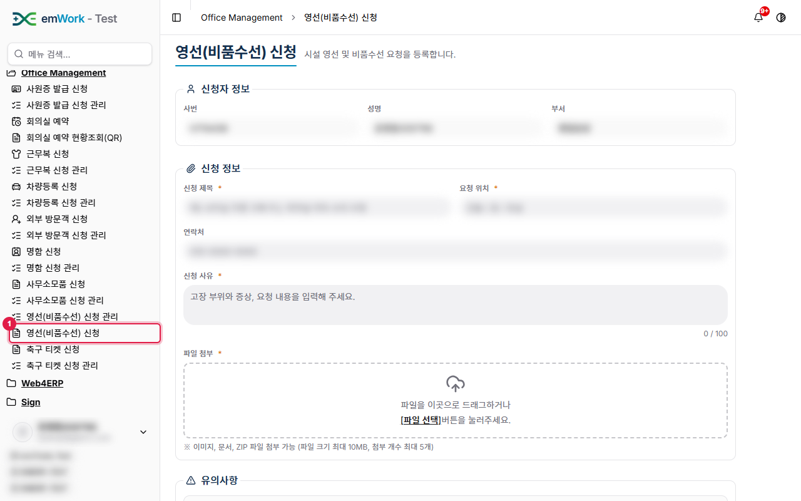
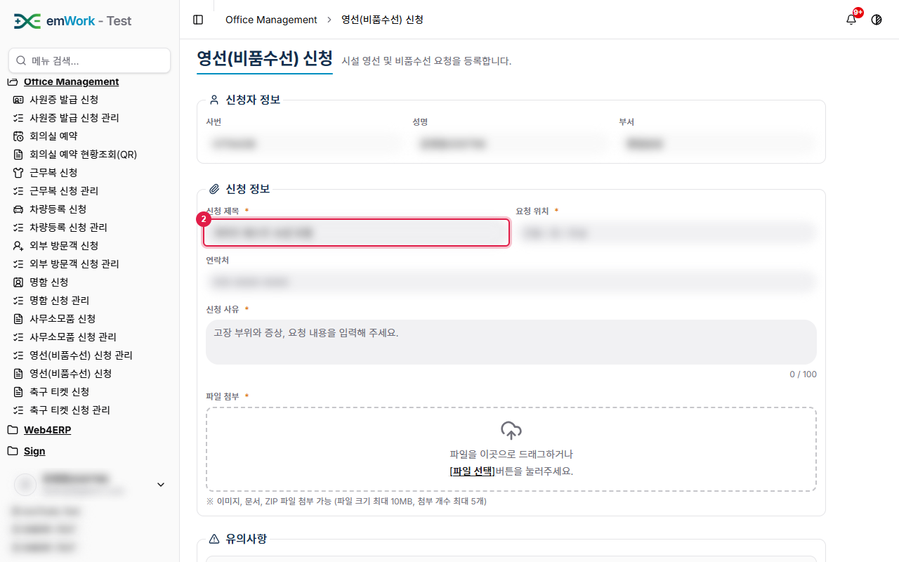
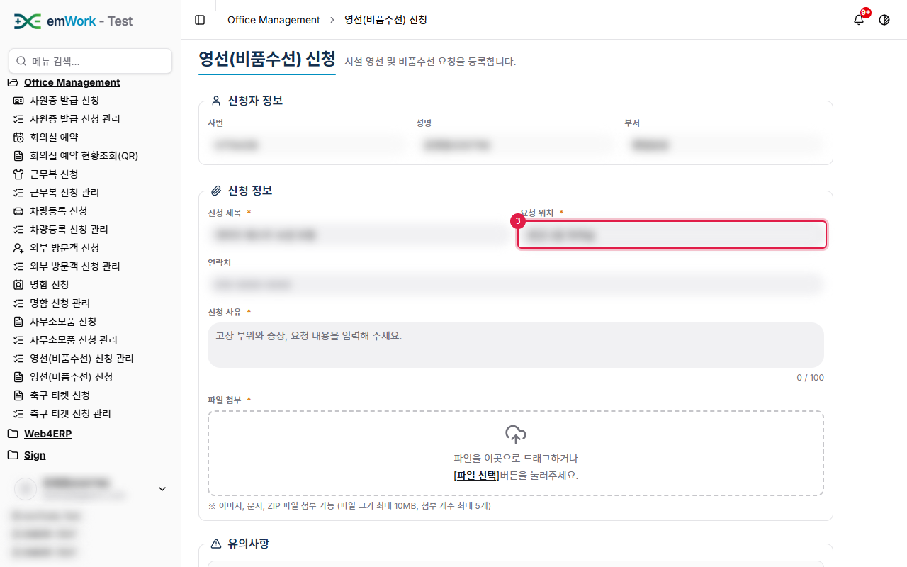
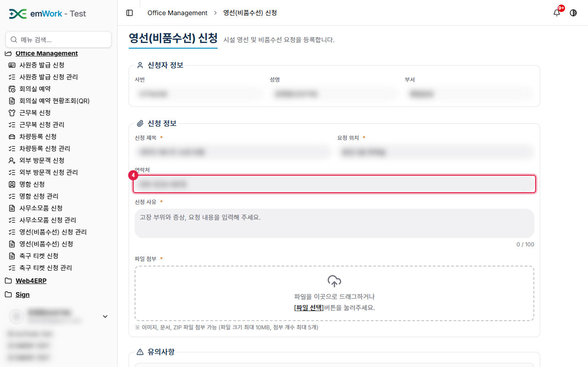
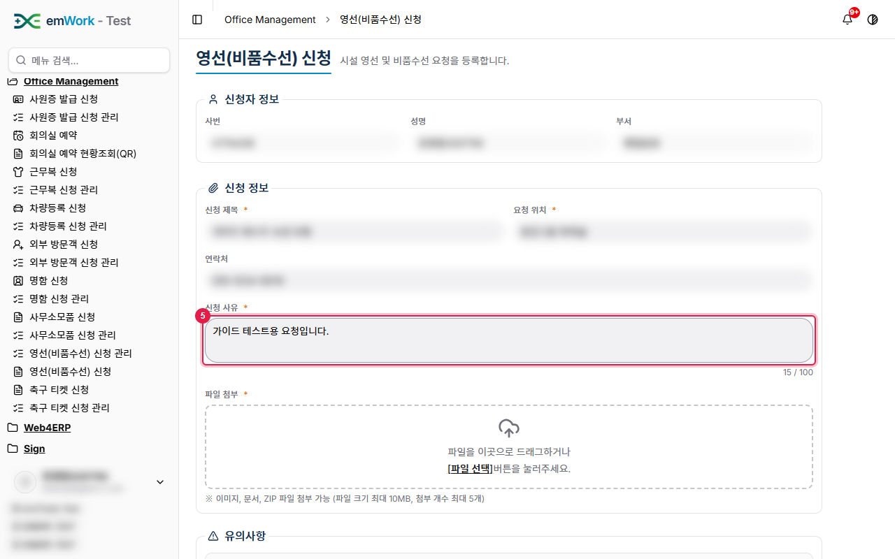
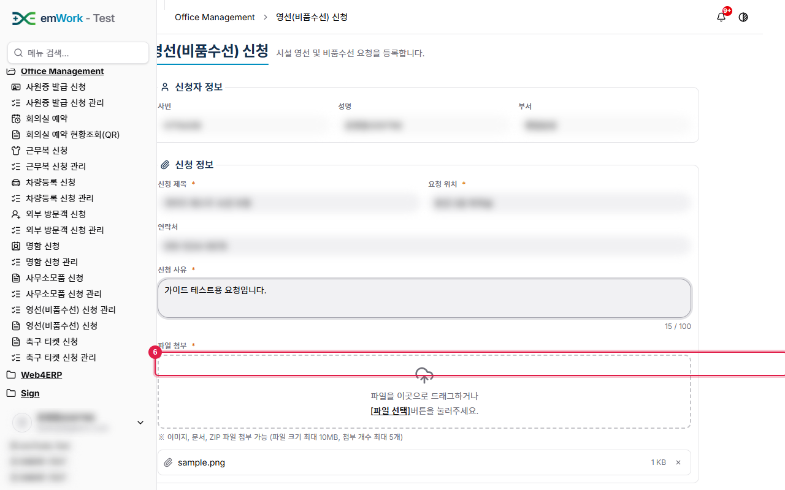
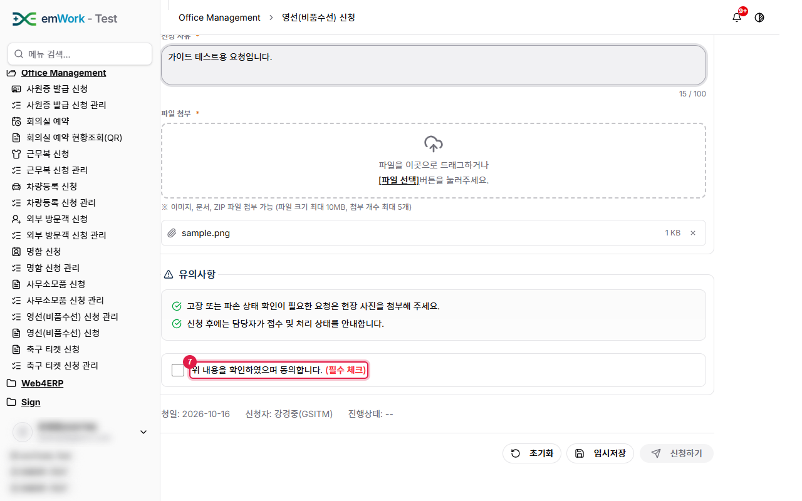
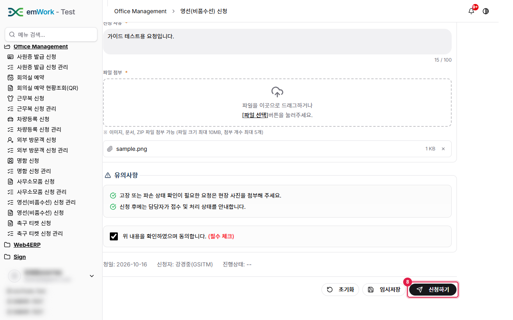
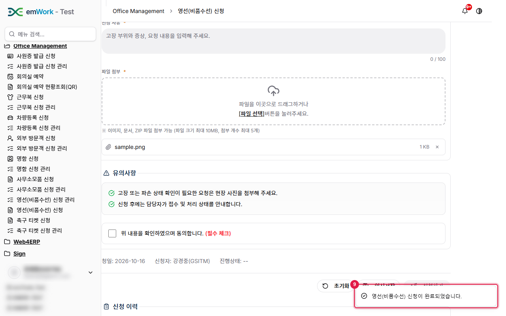

work4ERP 사용자 가이드 › Office Management
영선(비품수선) 신청
주요 내용
- 시설 영선·비품 수선을 요청합니다. 제목·위치·사유를 입력하고 증빙 파일을 첨부합니다.
주의 사항
- 파일 첨부는 필수입니다(이미지·문서·ZIP, 파일당 최대 10MB, 최대 5개). 신청 사유는 100자 이내입니다.
- 동의 체크는 필수입니다.
기능 요약
- 신청 제목·요청 위치·연락처·신청 사유 입력.
- 파일 첨부(드래그 또는 파일 선택).
- 초기화·임시저장·신청하기.
1
'영선(비품수선) 신청'을(를) 클릭합니다. 비품 수선·시설 보수를 요청하는 화면입니다. 신청자 정보는 로그인한 사용자 정보가 자동으로 표시됩니다.

2
신청 제목을 입력합니다.

3
수선이 필요한 위치(건물/층/호실)를 입력합니다.

4
연락처를 입력합니다(선택).

5
고장 부위와 증상, 요청 내용을 입력합니다(최대 100자).

6
증빙 사진 등 파일을 첨부합니다. 이미지·문서·ZIP, 파일당 최대 10MB, 최대 5개까지 첨부할 수 있으며 첨부는 필수입니다.

7
유의사항을 확인한 뒤 동의에 체크합니다. 필수 항목입니다.

8
모든 항목을 입력했으면 '신청하기' 버튼을 클릭해 신청합니다.

9
신청이 완료되면 완료 메시지(토스트)가 표시됩니다.
